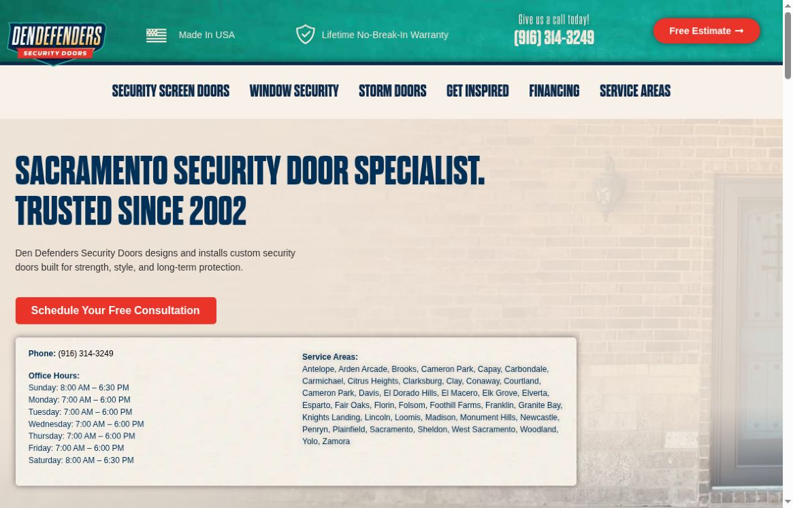

Local Meta ads
Reach nearby people on Facebook and Instagram.
A custom audit / Den Defenders
We’re Vessel Archive, a local Sacramento marketing team.
A short plan for Den Defenders Security Doors.
Reach nearby people on Facebook and Instagram.
Real videos, photos and clear messages.
Get found through your Google Business Profile, site and blogs.
What you do well
Your Sacramento page makes the service clear. Google shows strong local feedback, and your Instagram already uses plenty of video.
The next step is a more consistent path from discovery to trust.
Sacramento Google profile ↗
What we found / 1 of 2
BBB lists one unanswered complaint among the reasons for its D+ rating. A shopper checking the brand may see an unresolved concern before calling. BBB’s wider business profile, not the Sacramento Google rating. BBB profile ↗
The Sacramento site lists 8880 Cal Center Drive. BBB lists 9912 Business Park Drive. Explain which location serves customers so shoppers do not have to guess. Different addresses do not prove either location is wrong. Compare business details ↗
What we found / 2 of 2
The NorCal Instagram bio offers a free consultation but links to the national homepage. A local landing page could keep the Sacramento phone number and service area in view. This is a path improvement, not a broken-link claim. Instagram bio ↗
How we would help
Review the open BBB case, answer through the proper channel and set an owner for future public feedback. Do not expose customer details.
Confirm showroom, office and service-area details. Update public listings or clearly label each location’s role.
Send NorCal visitors to a simple local consultation page. Keep the phone number, service area and next step clear.
Ideas for your next shoot
Show measuring, building and installing one real Sacramento door, with the homeowner’s permission.
Show airflow, sight lines and the lock in close-up. Explain features without fear-based claims.
Let an installer explain what happens during a free consultation and how the home is protected.
A proposed starting plan / 1 of 2
We’d script, shoot and launch first ads within the first couple of weeks, alongside a focused website rebuild and clear brand direction. Start with local installations and a simple consultation path.
We’d track which videos, offers and audiences bring real calls and consultations, improve weak ads and send traffic to the new site.
Proposed timing depends on agreed scope, access and approvals.
A proposed starting plan / 2 of 2
We’d create new content around what worked, refresh ads and tighten the site so interested homeowners can take the next step.
Then repeat each month: shoot, launch, learn and improve.
Proposed timing depends on agreed scope, access and approvals.
From one local team to another
Whether we work together or not, we hope this helps. We love seeing Sacramento-area businesses do well. If you’d like, we can talk through the next step.